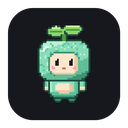

Comprobando conexión…
YouTube aparece en el notch. Elige su ventana flotante para verlo junto a tu mascota y seguir chateando.
Video de esta pestaña
Para otros sitios, activa la detección aquí. Su video flotante usa el reproductor de Chrome si la página lo permite.